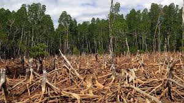

O'rmon kesilishi muammolari
O'rmonlarning kesilishi - bu zamonaviy ekologik muammolardan biri bo'lib, u tabiatning barqarorligini ta'minlashda muhim rol o'ynaydi.
- Biologik xilma-xillikning yo'qolishi
- Ekosistemalarning yo'qolishi
- Iqlim o'zgarishiga ta'siri

Bosh sahifaga qaytish